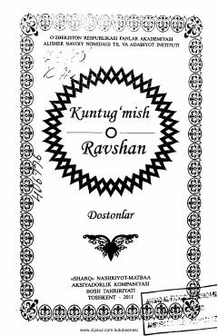

KRO'zbek xalqining mashhur «Kuntug'mish» va «Ravshan» dostonlari to'plami.
Ushbu kitobda o'zbek xalq og'zaki ijodining durdonalari bo'lgan «Kuntug'mish» va «Ravshan» dostonlari o'rin olgan. Dostonlar mashhur baxshilardan yozib olingan bo'lib, xalqimizning qadimiy an'analari, sevgi va sadoqat tuyg'ularini tarannum etadi. Kitob keng kitobxonlar ommasiga mo'ljallangan.